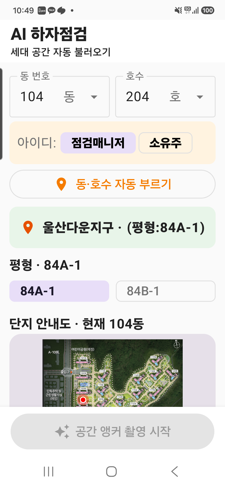

1. 종합평가
현장 입력의 핵심 흐름은 명확해졌으며, 인트로의 실데이터 도면과 사진 우선 입력 원칙은 제품 차별점으로 작동한다. 다음 개선의 중심은 세로 밀도와 화면별 강조색 통일이다.
8/10
현장 흐름 명확성세대 → 앵커 → 사진 → 의견 → 분류 → 저장
7/10
입력 최소화DB 도면, 공간 칩, 자동 위치와 AI 추천 활용
7/10
시각적 일관성카드·칩은 안정적이나 강조색 종류가 많음
6/10
한 화면 밀도인트로와 의견 화면은 추가 압축 여지 존재
2. S25 Ultra 실제 구현 화면
아래 이미지는 에뮬레이터나 설계 목업이 아니라 2026-07-25 설치 APK를 S25 Ultra에서 직접 캡처한 화면이다.



캡처 범위 안내
이번 실기 세션에서는 인트로 상·하단, 단지안내도, 평면도, 공간 선택까지 캡처했다. 카메라 화면으로 이동하던 중 USB 연결이 종료되어 카메라·판별확인·위치확인·의견·AI분류는 소스와 직전 S25 실행 검증을 기준으로 검토했다. 문서에는 확보하지 못한 화면을 실제 캡처로 가장하지 않았다.
3. 현재 전체 사용자 흐름
01세대 선택
02최초 앵커
03하자사진
04위치 확인
05하자의견
06AI분류·저장
07집계·마감
잘 구현된 점
- 사진 촬영이 하자 입력의 기본 진입점이다.
- 세대·평형·공간 컨텍스트가 다음 화면으로 이어진다.
- 앵커는 최초 1회만 설정하고 이후 평면도 닻 마커로 대체한다.
- 오프라인 로컬 저장과 최종 마감 흐름이 분리돼 있다.
주의할 점
- 인트로에서 동일 평형 정보가 카드·제목·칩에 반복된다.
- 큰 지도와 평면도가 연속되어 첫 화면의 스크롤이 길다.
- 주황·보라·초록·청록·빨강 등 강조색이 동시에 경쟁한다.
- 실내 GPS는 호수 확정이 아니라 추천 근거로만 사용해야 한다.
4. 화면별 UI·UX 검토
| 화면 | 현재 구현 | 평가 | 검토 의견 |
|---|---|---|---|
| 인트로·세대 선택 | 동·호수 선택/직접입력, 아이디, 인접 세대 추천 | 양호 | 정보 구조가 명확하다. 자동 부르기 버튼의 주황색 비중은 다소 높다. |
| 단지안내도 | 현재 동 위치를 붉은 마커로 표시 | 양호 | 방향 파악에 유효하다. 접기/확대 기능이 있으면 세로 공간을 더 절약할 수 있다. |
| 세대 평면도 | 84A/B, 나침반, 최초 공간 선택 | 양호 | 실제 도면 사용이 강점이다. 평형 표기는 한 영역에만 남겨도 의미가 유지된다. |
| 앵커 촬영 | 최초 1회 단계, 중앙 포커스, 플래시 | 구현 | 설정 완료 후 메뉴에서 제거하는 v3.3 원칙이 공간 효율에 적합하다. |
| 하자사진 촬영 | LIVE DETECTION, 셔터음, 재촬영, 플래시 | 구현 | 촬영 버튼과 이미지 판별 결과 사이의 상태 전환을 햅틱과 짧은 문구로 함께 알려주는 것이 좋다. |
| 판별확인 | 확대 이미지, 사진앵커 방향·거리, 재촬영 | 구현 | 큰 나침반 제거는 적절하다. 저신뢰 상태에서는 재촬영 이유를 1문장으로 제한해야 한다. |
| 위치확인·저장 | 자동 핀, 위치 수정 확인창, 닻 마커, 나침반 | 구현 | 자동 위치를 보호하고 확인 후 수정하는 방식은 현장 오조작 방지에 유효하다. |
| 하자의견 | RAW 의견, 실시간 STT, AI 양방향 반영 | 추가 실기검토 | 기능은 충실하지만 카드 수가 많다. 핵심 입력과 추천을 2단 구조로 더 압축할 여지가 있다. |
| AI분류 | 위치 → 하자부위 → 상세 → 공종 후보 | 추가 실기검토 | 후보 확률보다 ‘왜 이 후보인가’를 짧게 제공하고 최종 사람 확정을 강조해야 한다. |
| 접수현황·마감 | 하자 목록, 집계, 닻·핀 평면도, 세대 마감 | 구현 | 앵커 배너 제거와 평면도 닻 대체가 적절하다. 미완료 하자만 빠르게 필터링할 수 있어야 한다. |
5. 개선 권고 우선순위
P0 · 현장 검증 필수
- 카메라 → 판별 → 위치 → 의견 → 저장 전 과정을 10건 연속 입력해 화면 정지·데이터 잔존 여부 확인
- STT 권한 거절, 통신 단절, 무음, 긴 발화의 오류 복구 확인
- 새 호수 진입 시 이전 세대의 핀·집계·의견이 완전히 초기화되는지 확인
P1 · 화면 밀도 개선
- 단지안내도를 기본 축소 카드로 제공하고 필요 시 확대
- 인트로 평형 표기를 카드 또는 제목 한 곳으로 축약
- 의견 화면에서 RAW/STT 입력을 우선 노출하고 AI 보조 카드는 접을 수 있게 구성
P1 · 색상 체계 정리
- 주요 CTA는 파랑 또는 초록 한 계열로 통일
- 주황은 경고·추천 대기, 빨강은 하자 핀·오류에만 사용
- 보라 선택 칩은 보조 강조로 명도 대비를 낮춤
P2 · 제품 완성도
- 화면별 빈 상태·로딩·오프라인·동기화 상태 문구 통일
- 하자 입력 소요시간과 탭 수를 계측해 실제 UX 개선 효과 확인
- 접근성 글자 확대 120%와 야외 고휘도 환경 검증
6. 검토 근거와 판정
실기: Samsung Galaxy S25 Ultra SM-S936N, 패키지 com.axlife.pinset.debug
APK: D:\AI_projects\PinSet-App\android\app\build\outputs\apk\debug\app-debug.apk
검토 원칙: 실제 캡처와 소스 구현을 구분해 기록했으며, 미캡처 화면에는 캡처 완료로 표시하지 않았다.
최종 판정: 현장 파일럿 가능 전체 흐름 실기 캡처·10건 연속 입력 검증 필요